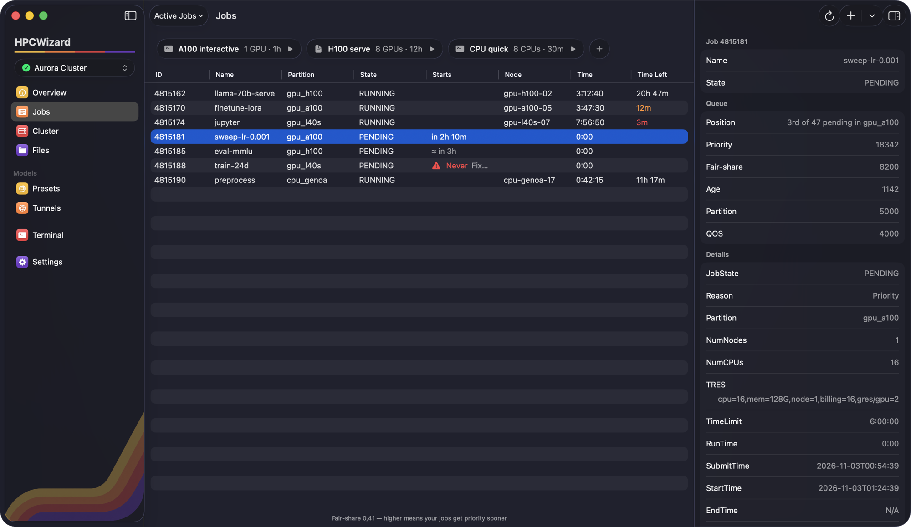
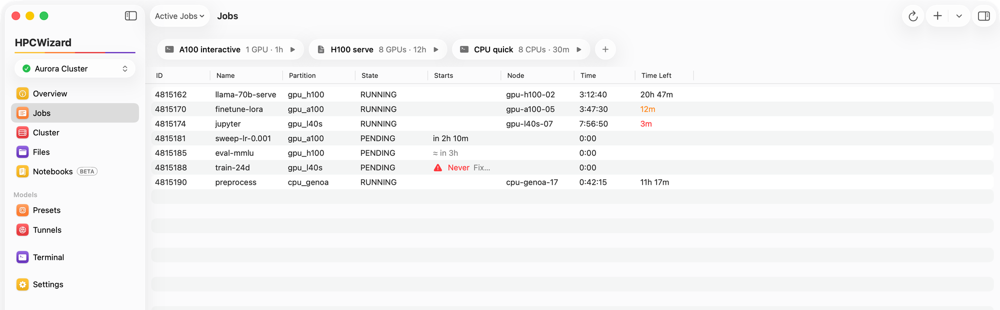
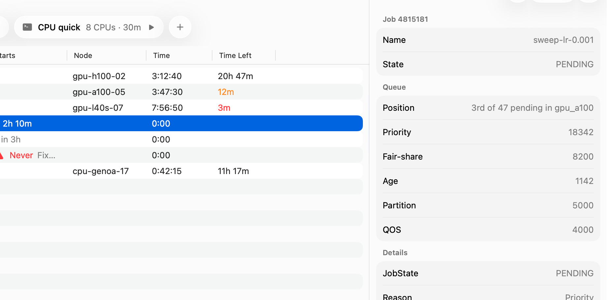
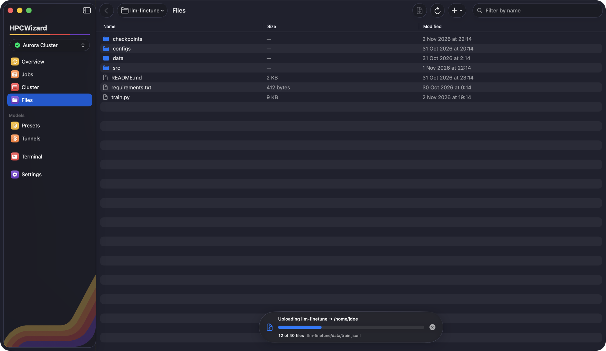
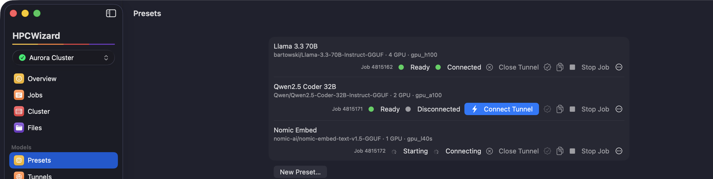
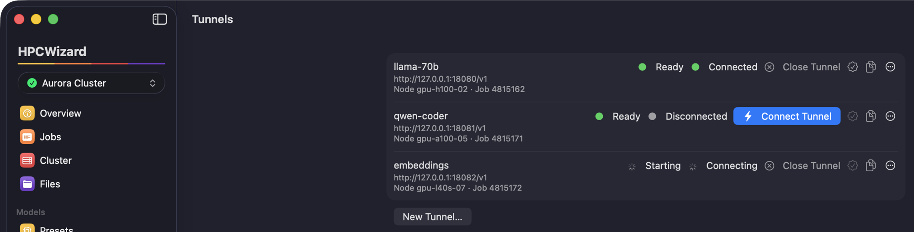
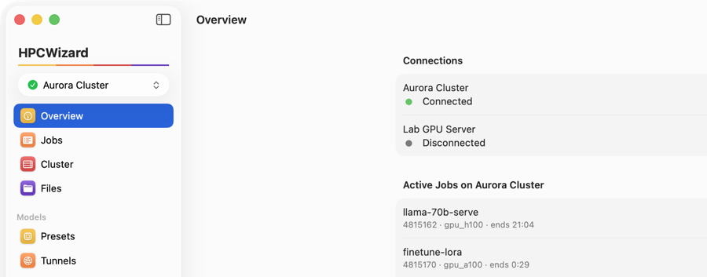
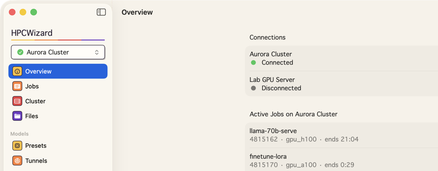
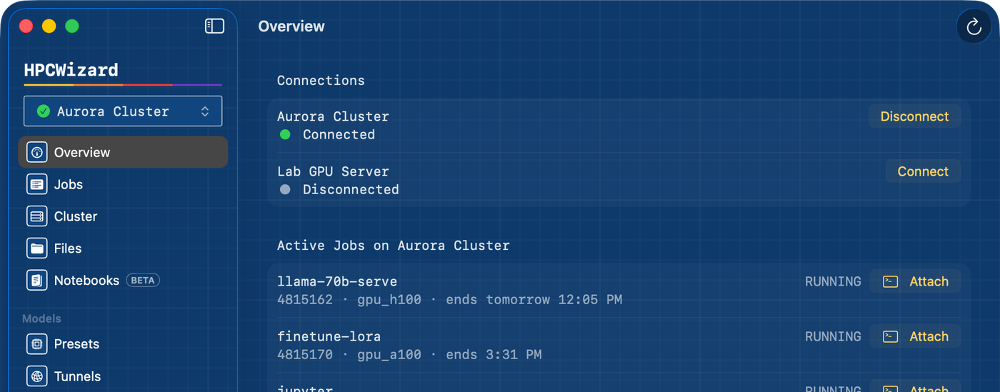
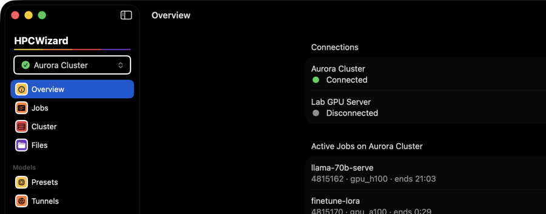

Submit jobs, get GPUs, move files and serve your own models on any Slurm cluster — from a calm, fast Mac app instead of a wall of terminal commands.

Every job you run, with its state, node and time left. Save the jobs you start every day as favorites and launch them with one click — an interactive shell on a GPU, or a batch script.

HPCWizard reads Slurm’s own estimates and fills the gaps with a forecast, shows your position in the queue and your fair-share — and tells you plainly when a job can never run, with a one-click fix.

Browse and edit files on the cluster. Drop a whole project in, untick what you don’t need, watch it upload — then bring results back to exactly where they came from on your Mac.

Launch a llama.cpp preset on a GPU node and HPCWizard opens a secure tunnel to it — an OpenAI-compatible endpoint on your Mac. You’ll also get a notification the moment a session is ready, and ten minutes before its time runs out.






No account, no subscription, no locked features.
All of it, in the free download.
Yes. Every feature is in the free download, with no account, subscription or paid tier.
No. HPCWizard uses standard SSH and the Slurm commands your cluster already has — squeue, sbatch, srun and friends.
Any Slurm cluster you can reach over SSH, including ones behind a jump host. Passwords, keys and one-time codes all work.
No. You sign in once per session to open a secure connection. API keys for tunnels are kept in the macOS Keychain.
No. HPCWizard only talks to the cluster when you do something, so it puts no load on the login node.